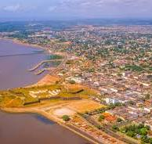

O Amapá é um estado localizado na região Norte do Brasil, conhecido por sua vasta floresta amazônica e por ser uma das áreas mais preservadas da floresta tropical. Sua economia é baseada principalmente na exploração de recursos naturais, como a mineração de manganês, além da pesca e do extrativismo vegetal. O Amapá também possui uma rica diversidade cultural, com forte presença de comunidades indígenas e tradições locais. Uma das suas principais atrações é o Parque Nacional do Cabo Orange, que destaca a beleza natural e a biodiversidade da região.
